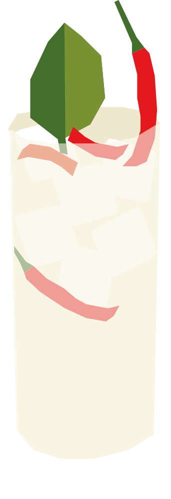

¿Cómo revivimos el turismo?
Creado en 2008 por el bartender Surasakdi Pantaisong, ganador de un concurso nacional organizado por la Autoridad de Turismo de Tailandia junto a la Asociación de Hoteles del país. Se lanzó oficialmente en 2009 como "el cóctel nacional de Tailandia" para reactivar el turismo tras una crisis política.
RECETA
- 50 ml vodka
- 15 ml jarabe de azúcar
- 15 ml jugo de lima
- 2 rodajas de chile rojo
- 2 trozos de jengibre
- 2 hojas de lima kaffir
- 15 ml agua de coco
- Hielo
- Chile rojo
- Machaca ligeramente el chile, jengibre y hojas de lima kaffir con el jarabe de azúcar en una coctelera.
- Agrega el vodka, jugo de lima, agua de coco y hielo.
- Agita bien y cuela en un vaso con hielo.
- Sumergir un palo de madera tipo dawa en miel y colocarlo en el coctél para seguir mezclando
- Decorar con chile rojo y una hoja de lima kaffir.
Vaso: Vaso alto